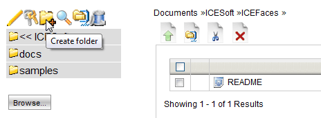
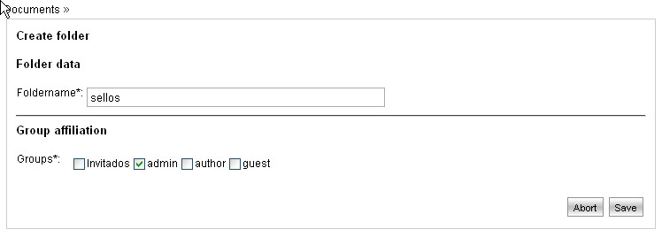

Adding a Folder |
LogicalDOC organizes its documents using folders.
The basic idea is to use similar concepts as the ones that uses your hard disk to work with your folders.
A folder can contain documents and sub-folders.
In the visualization folder, all documents contained by folder are shown.
Clicking on the name of a sub-folder, it expands and shows a list of all its contained documents.
In order to add a new folder, it is, first of all, necessary to enter the section Documents, simply by using
the main menu.
Next, execute in sequence the indicated actions:
- Select the "father" folder by browsing through folders on the left side of the screen.
The current path and the contents of the folder will be shown on the right side of the screen. Alternatively, you can select the folder displaying the tree hierarchical system by pressing the button "Browse".
- Click on the "Create folder" icon, placed on the left side of the screen.

- Define the name of the folder and the groups it belongs.
It is necessary to take special attention to the affiliation of the groups a folder belongs since only the customers that are part of such groups will have visibility on the folder; customers from different groups will not see nor will be able to access folders on which they do not have reading permissions.
As an example, in the next image, only the customers from the "journalists" group will have visibility and therefore knowing about the existance of the new folder and the documents it contains.
